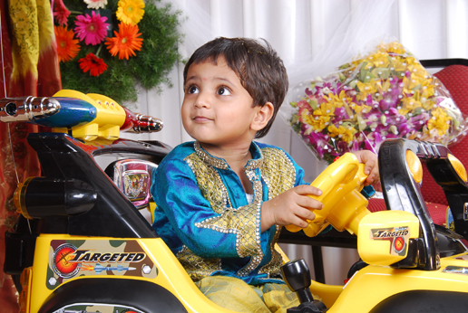
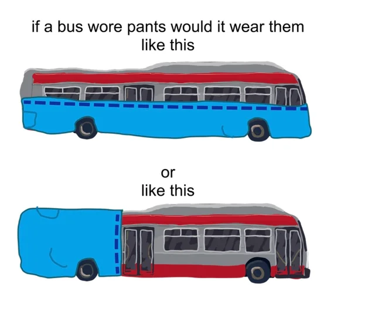

Unfortunately, I look nothing like this anymore, nor am I anywhere near as cute :(((
(Srinaren Venkat Ayinala, if you want my government name!)
Hi! I'm Naren, originally from Hyderabad, India. I'm currently an undergraduate Computer Science student at the University of Maryland, College Park, with minors in Mathematics and Quantum Science and Engineering.
I love programming, contributing to open-source projects, and building things that I find interesting. I'm also a huge Wikipedia enthusiast and have made over 20,000 edits to articles on the platform!
Outside of computer science, I'm a massive comic book fan, especially DC Comics. I also absolutely love aviation and enjoy keeping up with everything happening in the airline industry!
Below are notes I've prepared while taking various classes at the University of Maryland. I've tried to make them as comprehensive and accessible as possible for anyone who might find them useful!
I've also put together some practice exams and other resources while working as a teaching assistant. Hopefully, these will help you prepare for your exams!
I've also decided to share some of the notes and study materials I've prepared for the Central Board of Secondary Education (CBSE) Class 12 curriculum in India. Hopefully, these will be useful to students preparing for their board examinations or anyone looking to revise these subjects!
I've also put together some practice exams and other resources while working as a teaching assistant. Hopefully, these will help you prepare for your exams!
A super, super cool project that I had the opportunity to work on as an AI Engineering Intern! I worked on a variety of things here, including developing a Redis-focused AI agent to observe, diagnose, mitigate, and resolve anomalies in production systems using a combination of deterministic and probabilistic methods.
I also got to work with large language models, including fine-tuning and retrieval-augmented generation (RAG), to help build more intelligent and reliable systems.
This was genuinely one of the coolest projects I've worked on, and I learned a ton along the way. I'm really proud of what we built, so do check it out when you get the chance!
This is a project that's especially close to my heart. I originally developed RythuSneha for my grandparents, with the goal of helping bridge the digital divide and making useful agricultural information more accessible to farmers in India.
What started as something personal eventually grew into a platform that reached over 2.3 million views and 24,000 downloads! One of the proudest moments for me was having my work recognized by the Telangana State Government :))
This project really showed me how technology can be used to solve problems that affect people around us, and it remains one of my favorite things I've built.
I recently joined this amazing open-source team at UMD! I'm really excited to work with everyone and am looking forward to contributing a lot to the project!
I worked as a research assistant at the Purcell Lab at UMD! My work involved analyzing audio recordings from fMRI reading experiments using Audacity, identifying reaction times and classifying response errors to help improve the accuracy of behavioral datasets.
It was a really interesting opportunity to work at the intersection of computer science, language, and cognitive neuroscience!
I'm part of UMD's FIRE research program, where I've been working on atmospheric science and climate modeling research. Our research focuses on understanding how decreasing Arctic sea ice extent affects cold air outbreaks in North America.
I've worked with the Weather Research and Forecasting (WRF-ARW) model, atmospheric reanalysis datasets such as ERA5, and NCAR's Derecho supercomputer to simulate and analyze weather systems. It's been a really interesting opportunity to apply computational methods to climate and atmospheric science!
I'm currently a teaching assistant for CMSC131 (Object-Oriented Programming I) at UMD, working with Professor Pedram Sadeghian. I help students understand introductory programming concepts in Java and prepare additional practice materials to help them succeed in the course!
If you notice any mistakes or inaccuracies in my notes or resources, please let me know at ayinala [AT] gmail [DOT] com, and I'll rectify them as soon as possible!
